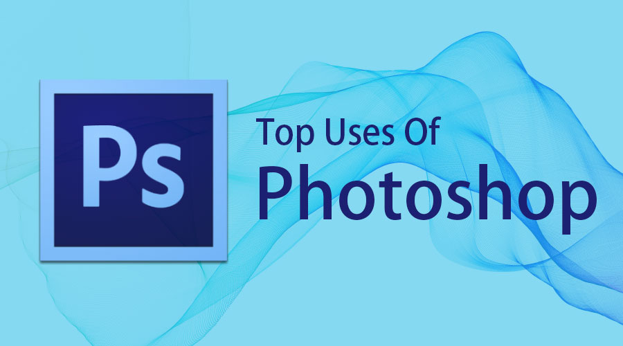
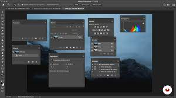
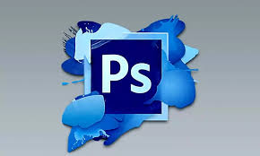

.png "IMAGEM")
| | PHOTOSHOP ADOBE |
O Photoshop é um software da multinacional americana Adobe Inc. usado para edição de imagens,
criação de arte digital, design gráfico e animações.
A multiplicidade de usos do software faz com que o Photoshop seja uma ferramenta de trabalho para diversos tipos de profissionais.

| COMO FUNCIONA O PHOTOSHOP ADONE? O Photoshop permite que você trabalhe com uma ferramenta de edição de textos, em que você escolhe a fonte, o tamanho e o posicionamento dela na tela. Lembre-se sempre de criar uma camada para adicionar o seu texto! Isso garante que ele fique separado das imagens e das outras peças. | QUAIS FUNÇÕES DO PHOTOSHOP ADONE Ferramenta Mover, Ferramentas de Moldura, Ferramentas Laço, Ferramenta de seleção rápida, Ferramenta de Varinha Mágica, Ferramenta Zoom, Ferramentas de recorte no Photoshop, Ferramenta para Recortar, Ferramenta Recorte com Perspectiva, Ferramenta Setor, Ferramenta Selecionar Setor |
|  |  |